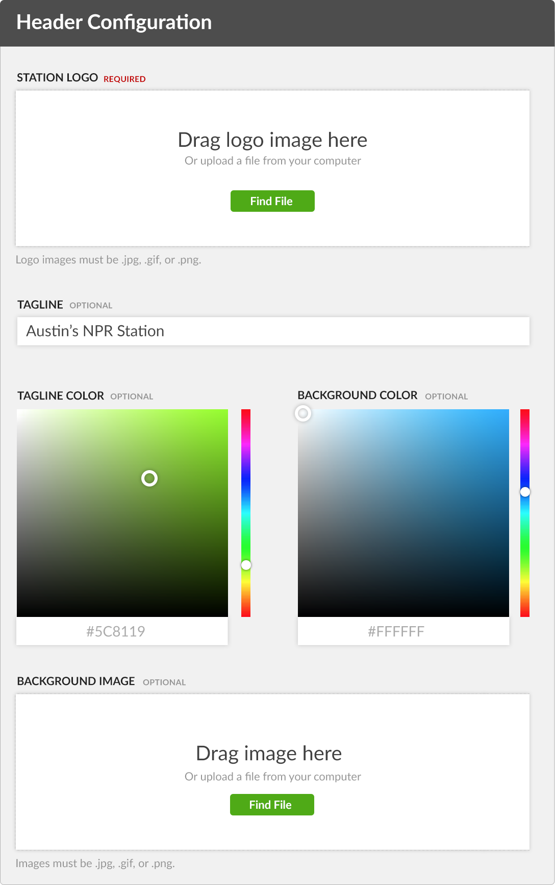
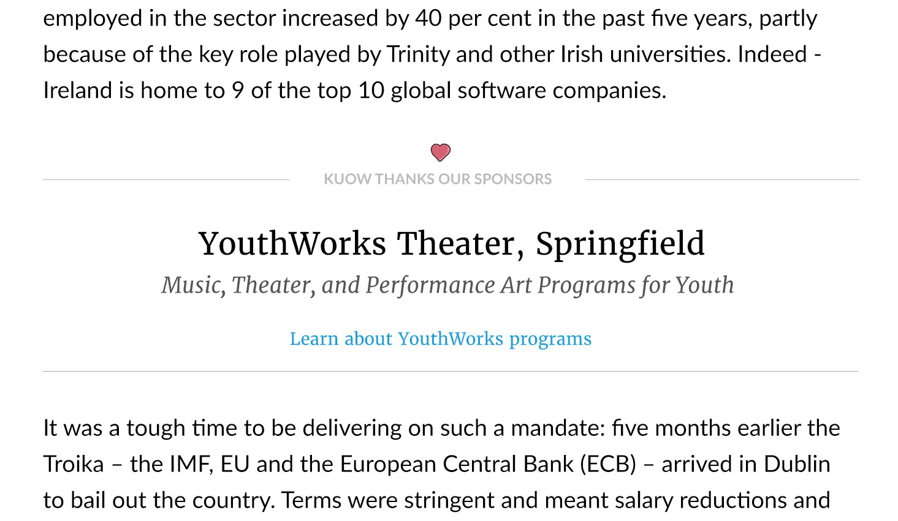

About Me
I’m married, two kids, I live in the Boston area. I like to run, hike, cook, eat good food, travel, take pictures, listen to podcasts. I do other stuff, too. Get in touch…
A few years before we started work on the story editor, NPR had a different challenge. Hundreds of small to mid-sized stations managed their websites using a custom Drupal platform that NPR built and maintained. The platform, Core Publisher, worked well in many respects, but it used an outmoded, fixed-width design that didn’t display well on mobile devices.
It was obvious we needed to make the websites responsive. And we needed to update the backend as well to give stations new ways to present content. As always, we had to do it in a way that would satisfy a wide range of stations, each with different content strategies, priorities, and levels of digital experience.
Until this redesign project, NPR dedicated its own resources to managing station website branding. We had a couple of designers who created and modified logos, chose fonts and colors, and sometimes created unique illustrations. To the extent it was free to stations, they loved it — but it was financially unsustainable for NPR.
Stations were willing to give up the benefit of custom design services, but their websites would still need to reflect their brand guidelines. Our challenge was to design a system that a) our small team could build quickly and b) stations could learn to maintain with minimal support.
I proposed that we keep branding very simple at first, with a header stations could customize in a few key ways, and our advisory group agreed. However, a few complications soon emerged:
These factors made it difficult to design a system that would work for everybody. But not impossible. Based on experiments I did using HTML and CSS, I created a header template that would accommodate any shape of logo and all lengths of tagline without breaking a standard template.
To create and maintain their headers, station administrators logged into a simple form where they could upload or switch logos, enter tagline text, and select custom colors. I designed the system to be very forgiving. If an admin uploaded a very large image, it would be scaled down. If they forgot to customize text or color on the “Donate” button, we provided smart defaults.
Ultimately, more than 180 stations created custom, responsive headers for their sites. In the past, that accomplishment would have required NPR to allocate hundreds of hours of designer and front end developer resources to consult with stations, create logos and illustrations, and implement designs using custom CSS. With our new system, stations were able to do it on their own with minimal support from NPR.
The story page is the foundation of station websites. It’s the biggest draw for new users. People who see story pages are more likely to return to the site compared to those who don’t. And users are more likely to share story pages on social media than other types of station content.
We wanted to get story pages right.
I led our team in exploring the competitive lavvndscape and discussing examples of responsive layouts that did their job well. We spoke with station editors about the kinds of stories they wanted to create. We poured over our user testing and site analytics data to get an accurate picture of what was most engaging for our users.
Based on what we learned, we and the advisory group agreed to some principles to guide our design going forward:
As we started sketching ideas and showing our thinking to the advisory group, tension emerged regarding the sidebar. I argued we should consider removing it in light of our commitment to white space — and because it was arguably unnecessary content.
In contrast, station managers tended to like the sidebar because they could use it to satisfy a range of their constituents. Treating the sidebar as a “junk drawer,” they could use it for ads, pledge drive promotions, program announcements, links to other stories, almost anything they wanted — seemingly at no cost.
But we’d found there was a cost. Our research showed people came to story pages because they wanted the story, and our analytics supported this — almost nobody clicked on links and promotions in the sidebar. Moreover, user testing showed that some people were confused or distracted by elements in the sidebar. It seemed like a bad user experience.
Ads vs. Underwriting?
We couldn’t change a requirement that story pages accommodate business messages paid for by sponsors. I explored options to replace standard display ads with something that would fit better with the character of public radio. It led to interesting conversations — how might a public radio station handle underwriting on its website in a way that felt more inline with underwriting announced on-air? In the end, business decided the answer: we needed to include standard display ads.
Ultimately, most stations were convinced by our point of view, and those that weren’t came around when they tested our design and heard good feedback from their users.
Other than a few ads, the template focused exclusively on the story’s content. This gave editors the full width of the page to work with, and enabled us to provide options so they could create a variety of layouts and more immersive stories. [Show some examples]
Sidebar on typography
We took typography very seriously, exploring a number of fonts that would feel friendly, modern, and serious – and we limited our search to fonts that met a high level of readability. Further, we experimented with font size, line-spacing, paragraph width, and color to optimize the reading experience.
Subsequent user testing and feedback from station editors validated our approach. Users responded positively to the ample white space and readability. Editors liked having more control over the layout of their stories, taking advantage of it right away, and several stories created with the new layout quickly became some of the highest trafficked in the network.
NPR understood that member station homepages were becoming much less critical to user engagement. More and more visitors — following social media links or organic search results — came straight to the content they wanted. So NPR didn’t want to spend a lot of resources creating an elaborate homepage management system.
But station managers and administrators wouldn’t be satisfied with a homepage that was too limited, seeing it as an important reflection of their station’s brand. They wanted a range of tools for promoting stories, programs, events, and pledge drives.
And, of course, there was still a segment of users who regularly visited station homepages — particularly long-time listeners. We knew that this group would be most interested in listening live, finding information about announcements made on air, and donating. We also knew they tended not be super comfortable using digital tools and would require clear, easy-to-understand options.
In other words, the homepage should:
To handle these requirements, I designed a simple and flexible system based on regions and blocks. There were three regions, each with its own characteristics, and stations could use them in various combinations to create different layouts for different purposes.
To populate the regions with content, stations could choose from a small selection of ready-made blocks, such as a river of news or a display ad, or they could create a custom block. A custom block was a special content type we designed and built, and we offered it in a few flavors optimized for different use cases.
For example, we created the curated news block so an editor could hand pick a small number of stories and place them where they wanted. We made the promotional block for displaying non-news messages — typically, things like pledge drives, new programs, or upcoming events. The category block was optimized for automatically listing the latest headlines from a particular category, like “Business” or “Arts.”
Using this combination of regions and blocks, the homepage satisfied stations, end-users, and NPR. Stations can use layouts that suit their needs, and present content that suits their capabilities. User testing indicated the homepage worked well for existing and new visitors. And NPR was happy to provide stations with a product requiring little maintenance.
I’m married, two kids, I live in the Boston area. I like to run, hike, cook, eat good food, travel, take pictures, listen to podcasts. I do other stuff, too. Get in touch…